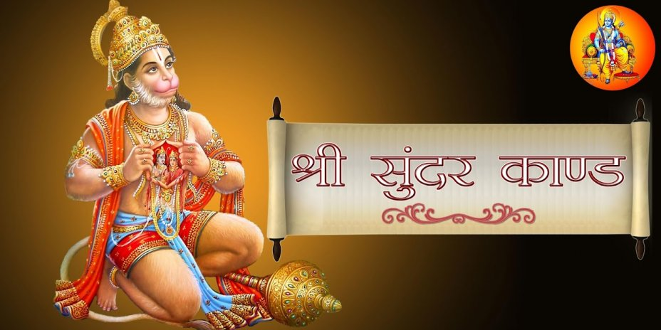

About 39 km. from Ranchi on Tata Road near Bundu, stands the elegant Sun Temple fashioned in the form of huge chariot with richly decorated 18 wheels (nine on each side) and seven life like horses ready to take off.
Surya Mandir,Bundu
About 39 km. from Ranchi on Tata Road near Bundu, stands the elegant Sun Temple fashioned in the form of huge chariot with richly decorated 18 wheels (nine on each side) and seven life like horses ready to take off.
Surya Mandir,Bundu
About 39 km. from Ranchi on Tata Road near Bundu, stands the elegant Sun Temple fashioned in the form of huge chariot with richly decorated 18 wheels (nine on each side) and seven life like horses ready to take off.
Dewri Mandir is located in Tamar 60 km toward south from the capital of Jharkhand i.e. Ranchi. It is in the Tata-Ranchi Highway (NH33). It is a very old temple of Goddess Durga.
You can reach here by ROAD(NH3) either from Ranchi or Jamshedpur.
Public Bus can be found from either Ranchi or Jamshedpur.
You can also hire Private vehicles to visit.
Nearby Airport:-Ranchi,Jamshedpur(Tatanagar)
Nearby Railway Station:-Tatanagar,Ranchi,Muri
Nearby Cities:-Ranchi,Jamshedpur

The main attraction of MAA DEWRI TEMPLE ,Which distinguised it are:-
the idol is having 16 Hands (Normally Goddess Durga is having 8 Hands).
Dedicated to Solha Bhuji Goddess, an avatar of Goddess Durga.
Dewri Temple is also believed to be the only temple where 6 tribal priests, known as Pahans, perform rituals and offer prayers alongside the Brahmin priests.